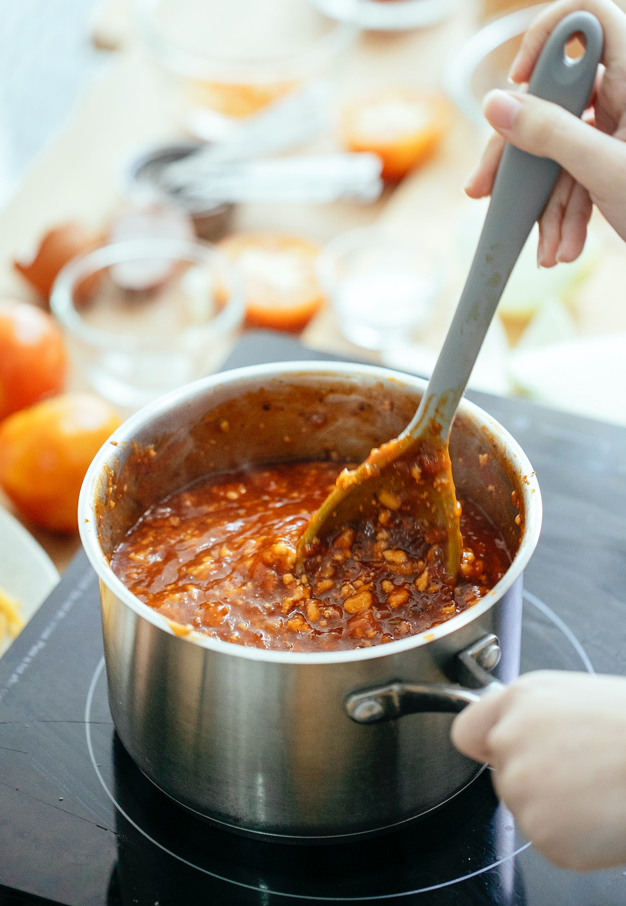

Lentil Stew

Description
This is a vegan red lentil stew recipe, flavored with loads of lemon juice and garlic.
Ingredients:
- 4 cups water
- 2 cups green peas
- 1 cup dry red lentils, rinsed and drained
- 2 medium potatoes, peeled and diced
- 2 medium carrots, peeled and diced
- 1 medium green bell pepper, chopped
- 2 leaves Swiss chard, shredded
- 5 cloves garlic, chopped
- ¼ teaspoon ground nutmeg
- ⅛ teaspoon ground black pepper
- 3 medium lemons, juiced
Steps:
- Place 4 cups water in a pot and bring to a boil. Add peas, reduce heat to low, and cook, 3 to 5 minutes. Remove peas with a slotted spoon. Reserve broth in the pot.
- Add lentils to the broth; bring to a boil. Cook until tender, 15 to 20 minutes.
- Meanwhile, heat a frying pan over medium-high heat. Add coconut oil to melt. Add potatoes, carrots, and bell pepper, and saute until soft, 7 to 10 minutes.
- Once lentils have finished cooking, add the potato mixture, cooked peas, Swiss chard, garlic, salt, nutmeg, and pepper to the pot. Squeeze in lemon juice and serve.